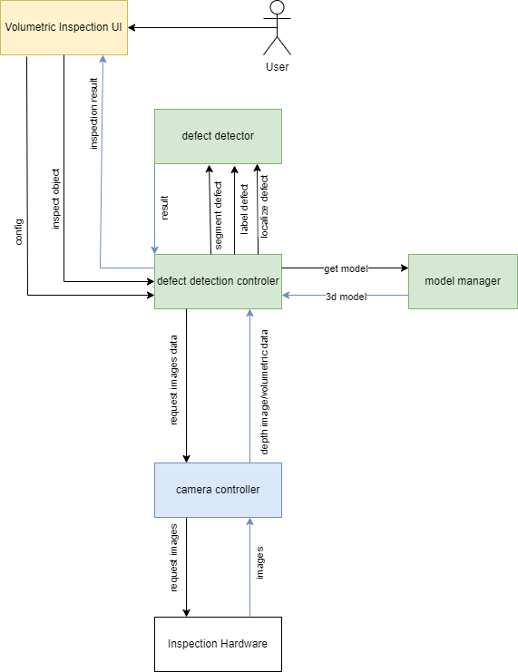
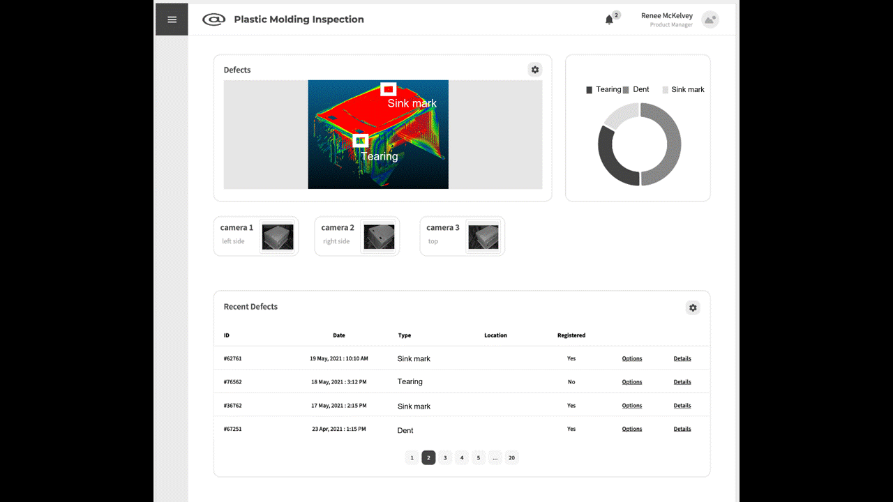

Plastic Molding Inspection
General Description
The app will automatically monitor the quality of the production using 3D reconstruction of manufactured goods regarding geometric correctness. The object is digitally reconstructed by an array of 3D-cameras. The 3D reconstruction of the object will be aligned and compared with the object’s CAD-model to determine its quality.
Based on the automatically provided model data, the app detects the errors and can visualize the results of the comparison as a false-colour image and point to the locations of individual defects by annotating the recorded images. Detected defects are classified and stored in a history, in order to be able to monitor production quality over time.
Top Ten Functionalities
- Multi Camera Setup: A generic multi camera setup should be build which involves calibrating the cameras to ensure accurate and synchronized data collection. This calibration process involves determining the intrinsic and extrinsic parameters of each camera (if not provided by the camera itself). Once calibrated, the cameras should simultaneously capture data from different perspectives.
- 3D-Reconstruction from multiple images: The provided depth data from different calibrated cameras should merge into a single 3D reconstruction (for example pointcloud or mesh). The aligning process can be supported by using local alignment methods like ICP to perform even better, especially to provide a more robust setup for industrial environments.
- Defect Localization: We need to localize defects in a local area and position them onto the given 3D object in a deformable object context
- Identify the local area where the defects are located. Use a localization technique algorithms (image processing or 3D feature based like normal-maps) to precisely determine the position of the defects within the local area.
- Map the position of the defects onto the 3D object by aligning the coordinate systems of the local area and the 3D object.
- Defect Characterization: Defects can be classified into various categories based on their characteristics or attributes. The most important defects must be clarified and categorized.
- Defect Visualization: This visual representation aids in quickly identifying and addressing the most critical defects. The detected defects should be visualized in a way, a human can understand. To enhance comprehension, the detected defects can be visualized using techniques such as a false color gradient or highlighting the area of the defect in the image.
- Automatic Target-/Actual-Comparison: By utilizing the provided CAD data and the scanned object data (pointcloud or mesh), an automated comparison should be performed between the target design and the actual object. This enables the identification of any deviations or variances that may exist.
- Statistical Defect Detection: Analyze the distribution of the defects in a collected dataset (per session, per month, per year...) to identify any significant differences between the detected defects and visualize them.
- Automatic Segmentation of Defect Categories: Defects can be classified into various categories based on their characteristics or attributes. The goal is to develop an automated system that can identify and segment defects, and then assign them to the appropriate category based on their characteristics. This categorization process helps in organizing and addressing defects efficiently.
Architecture Diagram

The system consists of six distinct components:
- Defect Detection Controller: is the central component of the application. It creates and manages instances of all other components and controls all data-flow. In particular it opens a HTTP-server to serve the Volumetric Inspection UI and a websocket-server for subsequent communication with the UI.
- Volumetric Inspection UI: is a web-GUI deployed by the Defect Detection Controller it allows a user to configure the defect detection, see current detection results or view historical detection data.
- Defect Detector: is the component responsible for defect detection and classification. It will be realized as a class in the main application.
- Model Manager: is the component responsible for loading and managing all model- (i.e. CAD-) data. It loads this data from the file-system. It will be realized as a class in the main application.
- Camera Controller: is the interface to the camera. This includes the camera driver and respective libraries.
- Inspection Hardware: comprises one or more depth-cameras. Currently supported cameras are Ensenso X36.
Image Overview

The Slideshow shows three scenes from the application:
- A mockup of the target web-UI.
- The setup at the development laboratory.
- The current prototype in action.
Hardware Components
The minimum requirements are:
- An array of depth-cameras. The system has been tested with 2 Ensenso X36. The specific requirements for the cameras depend on the use-case.
- A framework for mounting the cameras.
- A PC for running the application (see Computation Requirements).
- A monitor for displaying the results.
Computation Requirements
Plastic Molding Inspection requires at least the following hardware:
- CPU: 8 Core, 3000MHz
- RAM: 16 GB
- Space: 2 GB
Installation Procedure
The instructions for installing the app will be defined once the application has been completed.
How To Use
The instructions for using the app will be defined once the application has been completed.
Additional Learning Materials
Links to other learning materials like youtube tutorials will be added once the application has been completed.